Starting Position: Lie in a supine (on your back) position on a mat with your knees bent, feet flat on the floor
and heels 12 - 18" from your tailbone.
Place your hands behind your head, squeezing your scapulae (shoulder blades) together and pulling
your elbows back without arching your low back.
This elbow position should be maintained throughout the exercise.
Align your head with your spine, but allow it to move into slight flexion (moving the chin towards the chest)
during the upward phase of the exercise.
Upward Phase: Exhale, contract your abdominal and core muscles and flex your chin slightly towards your chest while slowly
curling your torso towards your thighs.
The movement should focus on pulling your rib cage towards your pelvis (the neck stays relaxed while the chin is tucked towards the neck).
Your feet, tailbone and lower back should remain in contact with the mat at all times. Continue curling up until your upper back is
lifted off the mat. Hold this position briefly.
Downward Phase: Gently inhale and slowly uncurl (lower) your torso back towards the mat in a controlled fashion keeping your feet,
tailbone and low back in contact with the mat.
Proper form is important for this exercise to prevent excessive stress on your low back.
Individuals usually perform this movement too rapidly and recruit the hip flexors to assist with the upward phase.
This technique tilts the pelvis anteriorly, increasing the stress on the low back and should be avoided.
The abdominals connect the rib cage to the pelvis so the movement should focus on bringing these two body parts
closer together while keeping the neck and shoulders relaxed.
Jumping jacks
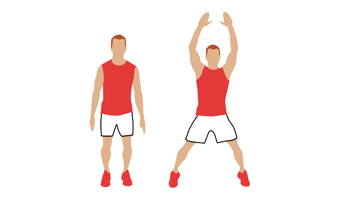
Stand upright with your legs together, arms at your sides.
Bend your knees slightly, and jump into the air.
As you jump, spread your legs to be about shoulder-width apart. Stretch your arms out and over your head.
Jump back to starting position.
Lunge
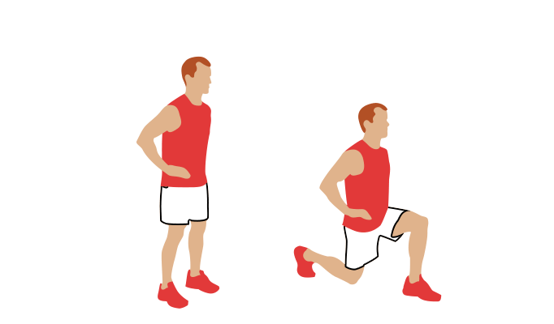
Starting Position: Stand with your feet together.
Depress and retract your scapulae (pull your shoulders down and back) without arching your low back, and "brace"
(engage your abdominal/core muscles) to stiffen your spine.
In preparation to step forward, slowly lift one foot off the floor, stabilizing your body on the stance (supporting) leg.
Avoid any sideways tilting or swaying in your upper body and try not to move the stance (supporting) foot.
Hold this position momentarily before stepping forward.
The raised (swing) leg should initiate contact with a heel strike first, slowly transferring your body weight into the leading (forward)
foot placed firmly on the floor.
As you load into this leg, avoid any sideways tilting or swaying in your upper body and try not to move the stance (supporting) foot.
As you lunge forward, focus more on dropping your hips towards the floor rather than driving your hips forward.
This will help control the amount of forward movement of your shinbone (forward tibial translation) over your foot.
Continue lowering your body to a comfortable position or until your front thigh becomes parallel with the floor and your tibia (shinbone)
is in a slight forward lean.
While lunging, simultaneously, bend forward at your hips, maintaining a flat back.
Firmly push off with your front leg, activating both your quads and glutes (thighs and butt muscles) to return to your upright, starting position.
We suggest you first learn how to perform single leg-stands on the ground before performing this forward lunge.
Once you master the forward lunge, you can progress to doing a lunge using arm drivers and mult-directional glute activation lunges.
Plank
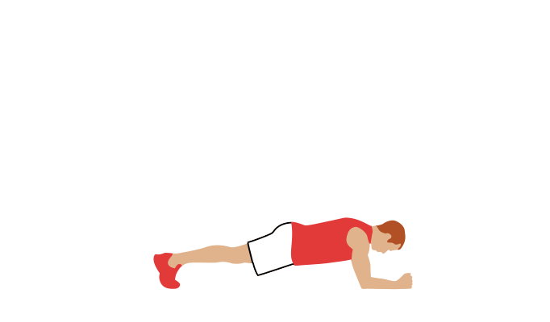
Starting Position: Lie prone (on your stomach) on an exercise mat or floor with your elbows close to your sides and directly under your shoulders, palms down and hands facing forward.
Contract your quadriceps to extend your legs and dorsiflex your ankles (pull toes towards your shins).
Contract your core and abdominal muscles to stiffen your torso.
Upward Phase. Slowly lift your entire torso off the floor or mat, maintaining a stiff torso and legs.
Avoid any arching (sagging) in your low back, hiking (upwards) in your hips or bending in the knees.
Avoid shrugging your shoulder and keep your shoulders positioned directly over your elbows with your palms facing down.
Continue to breath while holding this position for a specified time (5+ seconds).
Downward Phase: While maintaining a stiff torso and extended knees, gently lower your body back towards the mat or floor before relaxing.
If you experience any pain in the low back with this movement, stop the exercise immediately and consult with your doctor.
Push-up rotate
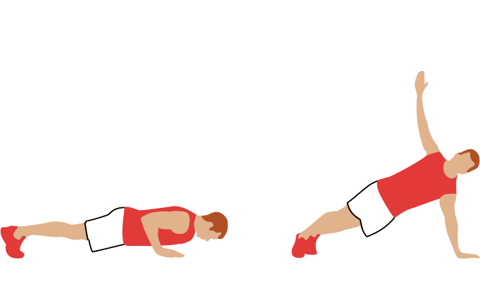
Start in a plank position, with your shoulders over your wrists and legs out behind you with your feet hip distance apart.
Pull your navel in and keep your back straight.
As you lower and exhale, bend your elbows outward to the sides.
Hold at the bottom for one breath.
Raise back up to top push-up position.
As you reach the top, keep moving in a fluid motion to side plank position: release your right arm and raise it to the ceiling, keeping your body in a long diagonal line.
Hold for one breath, then move back into plank position.
Repeat the push-up, twisting the opposite direction bringing your left arm toward the ceiling.
Return to plank position to complete one rep.
Push-Up
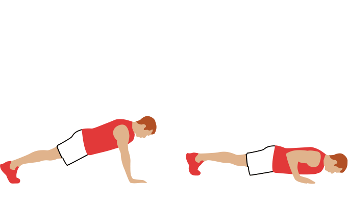
Starting Position: Kneel on an exercise mat or floor and bring your feet together behind you.
Slowly bend forward to place your palms flat on the mat, positioning your hands shoulder-width apart with your fingers facing forward or turned slightly inward.
Slowly shift your weight forward until your shoulders are positioned directly over your hands.
Reposition your hands as needed to allow full extension of your body without any bend at the hips or knees.
Stiffen your torso by contracting your core/abdominal muscles ("bracing"), your glute and quadriceps muscles and align your head with your spine.
Place your feet together with your ankles dorsiflexed (toes pointed towards your shins).
Downward Phase: Slowly lower your body towards the floor while maintaining a rigid torso and head aligned with your spine.
Do not allow your low back to sag or your hips to hike upwards during this downward phase.
Continue to lower yourself until your chest or chin touch the mat/floor.
Allow your elbows to flare outwards during the lowering phase.
Upward Phase: Press upwards through your arms while maintaining a rigid torso and head aligned with your spine.
For extra strength think about pushing the floor away from you.
Do not allow your low back to sag or your hips to hike upwards.
Continue pressing until the arms are fully extended at the elbows.
An alternative position is to turn your hands to face forwards and keep your your elbows close to your sides during the downward phase.
This shifts the emphasis from the chest muscles onto the triceps and may reduce stresses in the shoulder joint.
Pushing through the heel and outside surface of your palm provides greater force in your press and stability to your shoulders.
Running
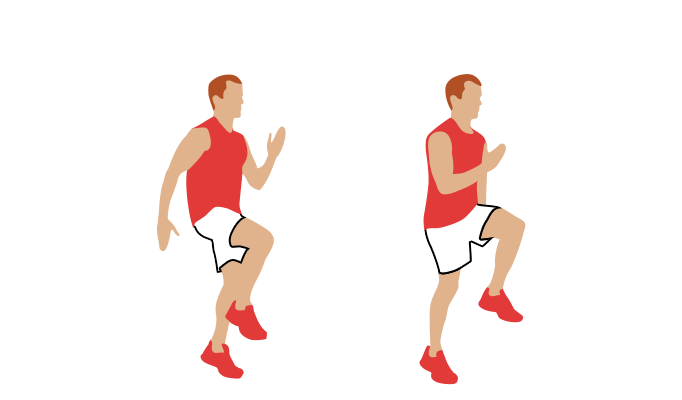
Stand straight with your feet shoulder width apart and face forward, opening up your chest.
Start pulling your knees up, and slowly land on the balls of your feet.
Repeat until set is complete.
Side plank
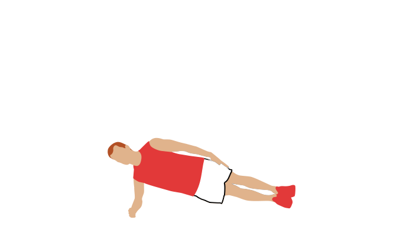
Starting Position: Lie on your right side on an exercise mat with extended legs, placing your left leg directly over your right leg and and stacking your feet one on top of the other.
Place your right elbow directly under your shoulder, align your head with your spine and keep your hips and right knee in contact with the exercise mat.
Upward Phase: Exhale, gently contract your abdominal / core muscles to stiffen your spine and lift your hips and knees off the mat, keeping contact with the side of your right foot and keep head aligned with your spine.
Keep your right elbow positioned directly under your shoulder.
Lowering Phase: Inhale and gently return yourself to your starting position. Alternate sides and repeat.
Exercise Variation: You can increase the intensity of this exercise by (1) increasing the length of time you are in the raised position, (2) raising the upper leg off the lower leg or (3) raising the lower leg off the floor and maintaining contact with your elbow and the foot of the upper leg only.
When raising the upper leg off the lower leg, there is no need to raise it to a level beyond parallel with the floor.
Squat
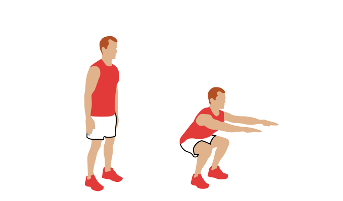
Stand with the bar on your upper-back, and your feet shoulder-width apart
Squat down by pushing your knees to the side while moving hips back
Break parallel by Squatting down until your hips are lower than your knees
Squat back up while keeping your knees out and chest up
Stand with your hips and knees locked at the top
Step up
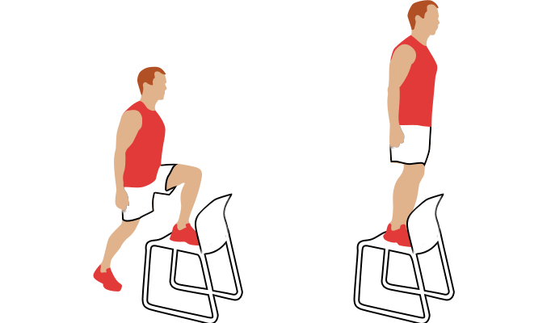
Starting Position: Stand with your feet parallel about hip width apart while holding dumbbells in your hands with palms facing inwards.
Depress and retract your scapulae (pull shoulders down and back).
Attempt to avoid shrugging your shoulder upwards.
Upward Phase: Slowly step to place your right foot on a platform, placing your foot firmly on the deck while keeping your torso upright and aligning your knee over your second toe.
Push off with the trailing (left) leg to raise your body onto the platform placing that foot alongside your leading (right) foot.
During this transition, your torso and your right tibia (shinbone) will move slightly forward past vertical, but try to avoid excessive forward movement.
Downward Phase: Slowly load the weight of your body into your leading (right) foot, step backwards to place the trailing (left) foot on the floor in its starting position.
Allow your body to lean slightly forward during the step-down movement. Load your weight into your trailing (left) foot and step off the platform with your leading (right) foot, returning to your starting position.
Repeat for the opposite side.
An exercise progression is to step-up onto one leg only and remain standing on a single-leg before stepping back down.
Single-leg stepping is a functional movement we perform daily.
Always monitor your foot, ankle and knee position.
Avoid movement of your foot and ankle (collapsing in or out), and always attempt to keep your knee aligned over your second toe.
Triceps dip
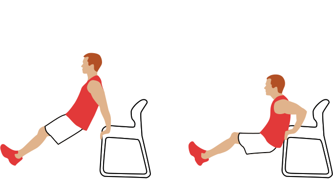
Find a stable chair, bench, or step.
Sit on the edge of the chair and grip the edge next to your hips.
Your fingers should be pointed at your feet.
Your legs are extended and your feet should be about hip-width apart with the heels touching the ground.
Look straight ahead with your chin up.
Press into your palms to lift your body and slide forward just far enough that your behind clears the edge of the chair.
Lower yourself until your elbows are bent between 45 and 90 degrees.
Slowly push yourself back up to the start position and repeat.
Control the movement throughout the range of motion.
Begin with 3 sets of 10 repetitions and increase your sets and reps over several weeks as you build muscle and strength in your triceps.
Wall sit
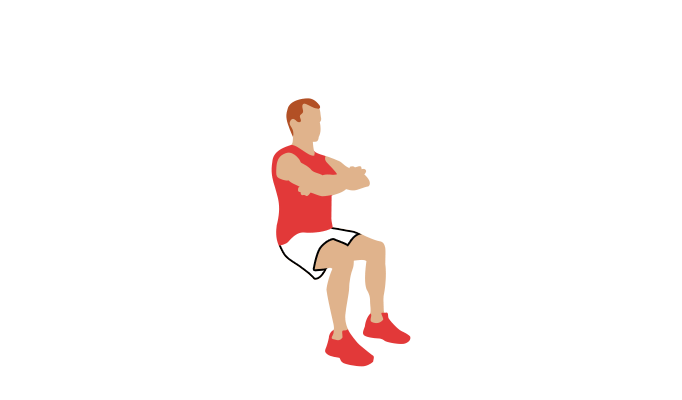
Start with your back against a wall with your feet shoulder width and about 2 feet from the wall.
Engage your abdominal muscles and slowly slide your back down the wall until your thighs are parallel to the ground.
Adjust your feet so your knees are directly above your ankles (rather than over your toes).
Keep your back flat against the wall.
Hold the position for 20 to 60 seconds.
Slide slowly back up the wall to a standing position.
Rest 30 seconds and repeat the exercise three times.
Increase your hold time by five seconds as you increase your strength.